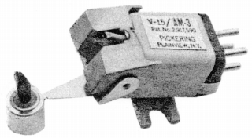

V-15/AM-3

■価格 8,900円■発電方式 MM型■出力電圧 5mV■針圧 0.75〜3g■再生周波数帯域 20-25,000Hz■チャンネルセパレーション 32dB■チャンネルバランス■コンプライアンス 24×10-6cm/dyne■負荷抵抗 ■直流抵抗 ■インピーダンス ■針先 0.7mil■自重 6g■交換針 (4,500円)■発売 〜1970年■販売終了 1973年頃■備考 価格は1970年頃のもの
ピカリングのインデックスヘ